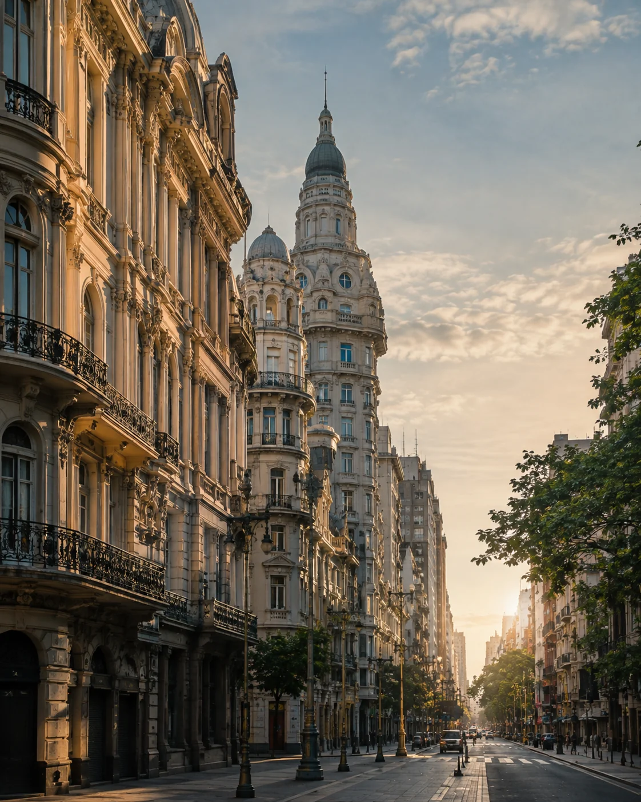
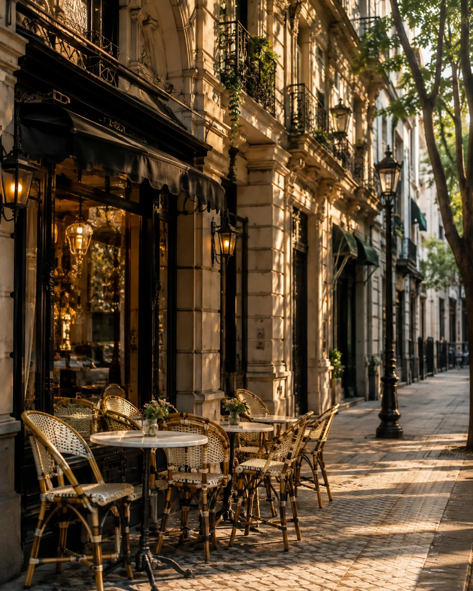

Buenos Aires urbana
Arquitectura y escala urbana
Avenidas monumentales, edificios belle époque y perspectivas que revelan la dimensión de la ciudad.
Buenos Aires cambia de ritmo de un barrio a otro. Recoleta, Palermo, San Telmo y Puerto Madero combinan arquitectura, cafés, cultura, caminatas y formas muy distintas de vivir la ciudad. Entender esa geografía es el mejor punto de partida para organizar el viaje.
Cuatro escenas para sentir la ciudad más allá de sus barrios: escala urbana, patrimonio, cafés y cultura.

Avenidas monumentales, edificios belle époque y perspectivas que revelan la dimensión de la ciudad.
Desde el Congreso hasta los grandes hitos cívicos, la arquitectura ayuda a entender cómo se construyó Buenos Aires.

Mesas en la vereda, fachadas históricas y tiempo para observar cómo transcurre la ciudad.
Teatros, salas históricas y una vida cultural que forma parte de la identidad porteña.
Una muy buena opción para una primera visita, con arquitectura, museos y recorridos a pie.
Cafés, restaurantes, parques y una vida de barrio más marcada.
Mercados, calles antiguas y una Buenos Aires con más textura.
Agua, skyline y un ritmo urbano más tranquilo y ejecutivo.
Después de elegir el barrio y el ritmo del viaje, estas son las herramientas de planificación y reserva que ya forman parte del ecosistema Lipe Travel Show.
Los cuatro videos se abren directamente en YouTube, manteniendo la página más ligera y evitando problemas del reproductor integrado en entornos de preview.